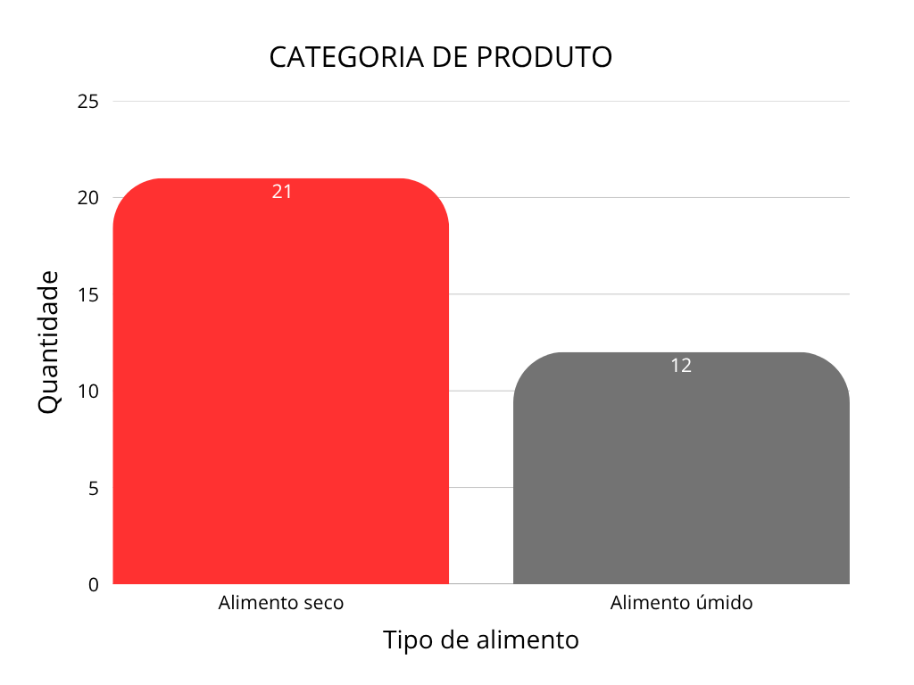
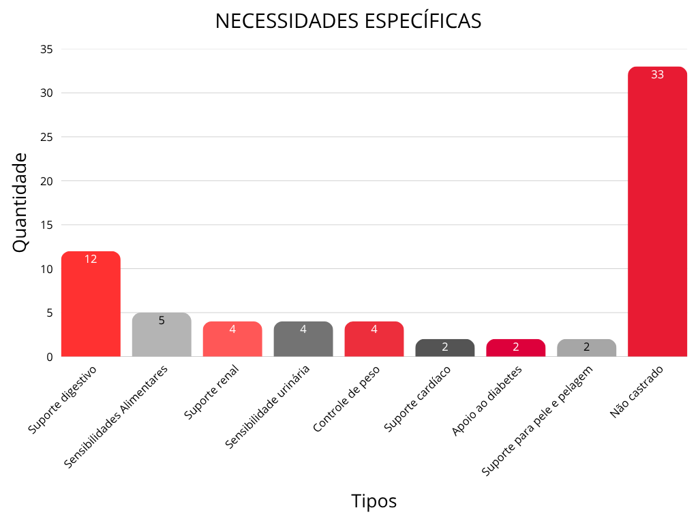

Gráfico da categoria dos Cães

Gráfico 1 - O gráfico apresenta a quantidade de produtos por categoria, mostrando que o alimento seco possui 21 produtos, enquanto o alimento úmido possui 12. Dessa forma, observa-se uma maior variedade de alimentos secos.

Gráfico 2 - O gráfico apresenta a distribuição dos produtos de acordo com a faixa etária dos animais. A categoria de maduros possui a maior quantidade, com 78 produtos, seguida por adultos, com 33, seniors, com 30, e filhotes, com 5. Isso demonstra uma maior concentração de produtos destinados aos animais maduros.

Gráfico 3 - O gráfico apresenta a distribuição das necessidades específicas dos animais. Observa-se que a maior quantidade corresponde aos animais não cadastrados (33), seguida pelo suporte digestivo (12). As demais categorias aparecem em menores quantidades, demonstrando a diversidade de necessidades relacionadas à alimentação e aos cuidados dos animais.

Gráfico 4 - O gráfico apresenta a distribuição dos animais de acordo com seu porte. A categoria com maior frequência é a de animais muito pequenos (31), seguida pelos pequenos (30), médios (28), grandes (27) e gigantes (26). Os resultados mostram uma distribuição relativamente equilibrada entre os diferentes tamanhos.
Gráfico da categoria Vet

Gráfico 1 -O gráfico apresenta 21 sacos de ração seca e 12 sacos de ração úmida, totalizando 33 sacos. A ração seca é a tradicional, em grãos, enquanto a úmida inclui sachês e patês. A ração seca apresenta a maior quantidade, com 9 sacos a mais.

Gráfico 2 - O gráfico apresenta 146 sacos de ração divididos por faixa etária: 5 para filhotes, 33 para adultos, 78 para maduros e 30 para sênior. A categoria madura apresenta a maior quantidade, com 78 sacos.

Gráfico 3 - O gráfico apresenta 68 sacos de ração distribuídos entre diferentes necessidades. A categoria não castrado possui a maior quantidade, com 33 sacos, seguida pelo suporte digestivo, com 12 sacos.

Gráfico 4 - O gráfico apresenta 142 sacos de ração classificados por tamanho: 31 muito pequenos, 30 pequenos, 28 médios, 27 grandes e 26 gigantes. A categoria muito pequena apresenta a maior quantidade, com 31 sacos.